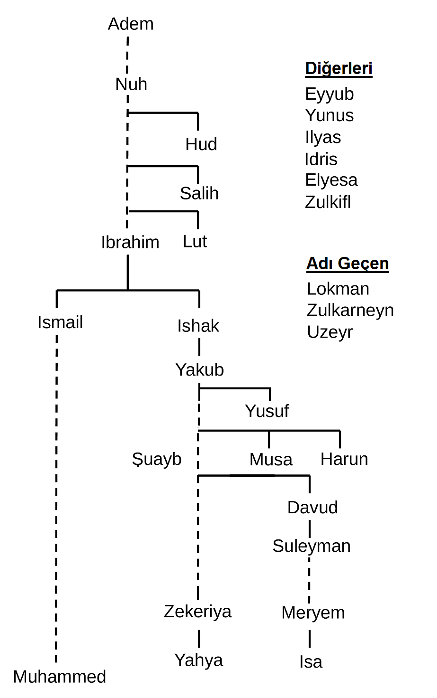

Kuran-ı Kerim'de adı geçen 25 peygamber:

Dersler ◀
Benzeri bir çalışma 1993'de kağıt üstünde aylarca sürmüştü. Bu sayfa yarım günde, şecere iki saatte yapıldı. Fikrin kaynağı Erkan Türe'ye ve çizimi yapan Yusuf Mercan'a teşekkür ederim.